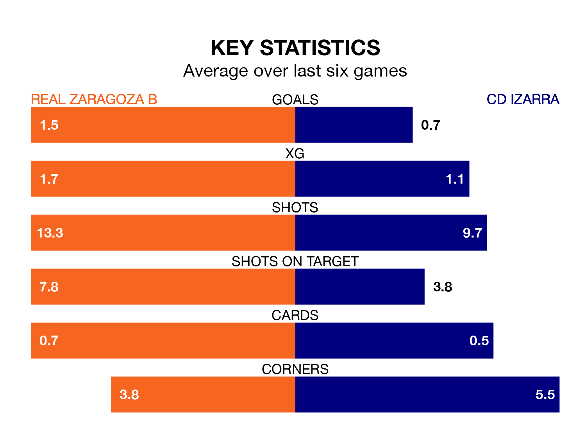

CD Izarra travel to Real Zaragoza B on early Sunday in the Segunda División RFEF Group 2.
The visitors come into the game on the back of a win in their last match, having beaten Deportivo Alaves B 1-0 at home, with a goal from Julen Madariaga Pascual.
Zaragoza B, meanwhile, drew their last match, 1-1 against UD Barbastro, with their goal scored by Adrian Liso Lahoz.
With 21 goals in 25 games so far this season, Izarra are scoring at below the league average rate with 0.8 goals per game. And they are conceding more than average, letting in 34 goals at a rate of 1.4 per game.
Zaragoza B, meanwhile, are above average scorers, with 1.2 goals per game, compared to a league average of 1.1. They have conceded 0.8 goals per game.
The away side are 14th in the table after 25 games, of which they have won six and drawn six, earning 24 points.
The hosts are eight places ahead of Izarra in sixth, with 11 wins and nine draws putting them on 42 points.
Zaragoza B are in reasonable form in the Segunda División RFEF Group 2, with three wins and two draws from their last six games.
With two wins and a draw over that period, Izarra's form is worse – they have taken seven points from 18, compared to Zaragoza B's 11.
Updated: 09:34 (UTC), 08/03/24